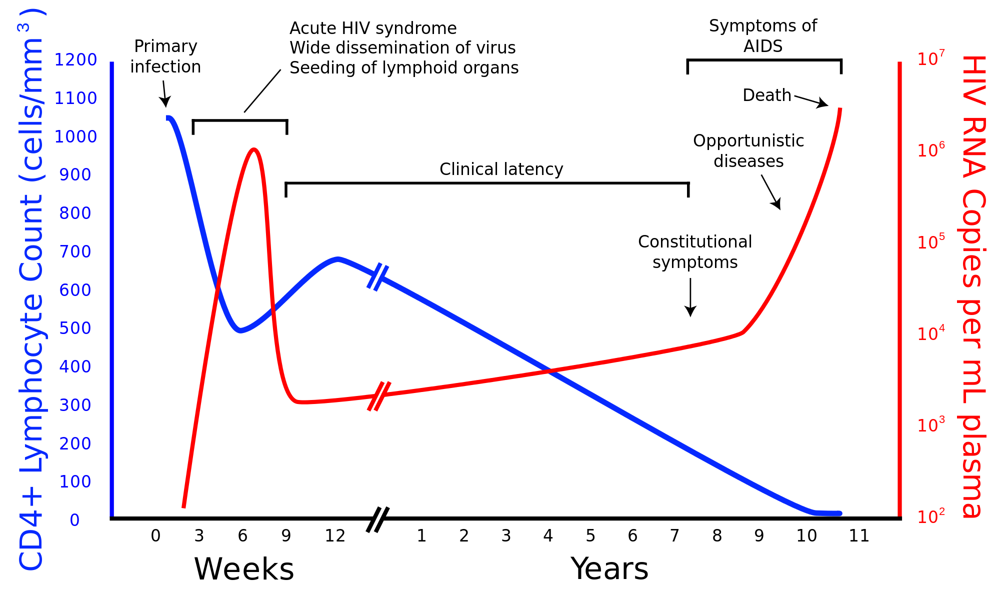
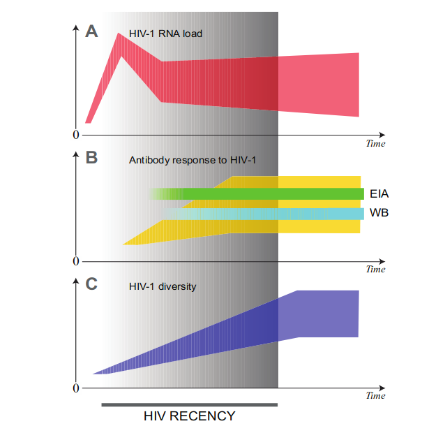
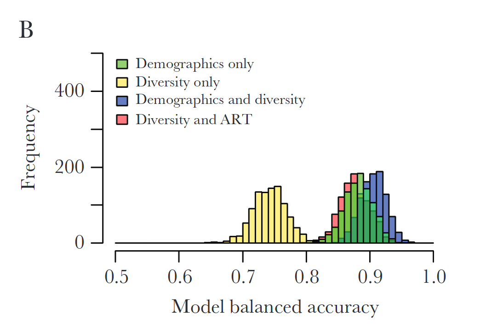
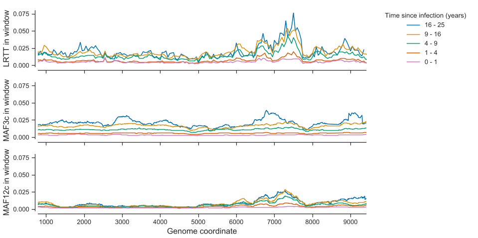
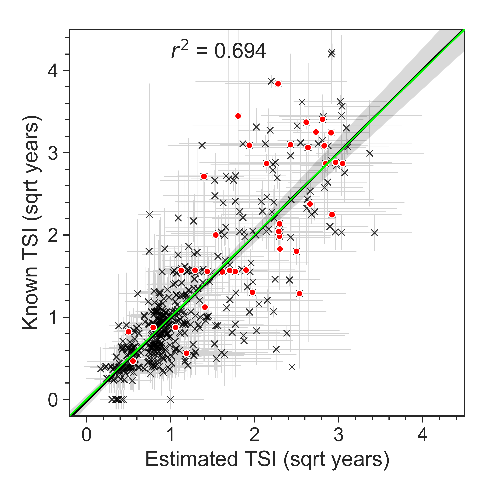

Intrahost diversity and recency of infections
40 minutes In the first section, we ll go through some background materials. specifically, we ll explain what is recency of infection, and then explain how within-individual HIV diversity can give us clue on how long ago an individual was infected. This section will cover some of the materials that Tanya presented aleady, but I tried to include more information on prior alternative methods, so it should have a slightly different spin.
Why do we care about recency?
but before even going through the definitions, we may want to make clear why we care about recency of infection, what kind of questions does it allow us to answer.
- delays to diagnosis in sub-populations for 2nd one too
incidence estimation
identifying sub-populations suffering from recent infections are happening.
determining generation intervals.
. . .
but getting data is hard:
longitudinal cohorts as gold standard
alternatives which are discussed in this section
What is recency? Natural history of HIV
- mention different stage classifications:Fiebing? …
- describe natural history of HIV: complex interplay between VL and CD4 counts
- mention “imbalance”: a very short dynamic period preceeds a long and static one. A very high VL may be indicative of a recent infection. However, a “medium” value does not help us discriminate/distinguish among other dates.

. . .
dynamics define infection stages: [ CDC: -@centers_for_disease_control_and_prevention_cdc_revised_2014] ; [ Fiebig et al. -@fiebig_dynamics_2003]
Lab assays to identify infection stages
- “lab” assay are based on the differences in internal “stages” of infection and immune response. For example a person may be suspected to be recent if first-level response antigens are present, but not other antigens more specific to HIV-1
test by seeing whether blood react when exposed to specific antigens. 1. is based antigen test based on increase in antibodies over time 2. quality of antibody respons 3. proportion of HIV-specific IgG to total IgG.
Based on the quality and type of immune response.
- Less sensitive Enzyme Immunoassays, antigen test [-@janssen_new_1998]
- Lag-Avidity [-@duong_detection_2012]
- Bed-CEIA [-@parekh_determination_2011]

This is great, but specificity and sensitivity are hard to control:
- individual level variation, confounding subtypes, ART status…

Being affected by ART makes it harder to trust results in a world where ART is more available, subtype makes it harder to generalise by location
An alternative unit of time: genetic diversity
- these assay generally target only one of the many facets of HIV response. I focused on antibody response and VL, but evolution dynamics bring up another source of information.

give detail on Ragonnet, still need a training set with recent and non-recent. + use of demographics.
HIV infection is a multi-faceted phenomenon: immune response is just one facet.
HIV-1 diversity grows as a function on time since infection.
NGS is more informative than Sanger (@carlisle_viral_2019)
Case study: recency in Botswana
before moving to HIV-phyloTSI, I want to go through another application of NGS data in the context of estimating time since infection in an African setting. In particular, highlighting the strength and limitations of such studies will help us: 1. put in context the HIV-phyloTSI algorith and 2. understand its advantages and drawbacks
@ragonnet-cronin_human_2022 developed recency classifier
- end goal: characterizing undiagnosed cases in Botswana (@bhebhe_epidemiological_2022)
- data: demographic data, some testing data and individual level NGS
- how: train ML model on known recent and known chronic infections, and use it to classify unknown.
. . .
comments on model:
- still required cohort study, and not directly generalisable to other contexts.
- simple measures of diversity: entropy and mean pairwise distance
- these alone are not enough to provide good classification
Case study: recency in Botswana

HIV-phylo TSI
Addresses drawbacks of previous methods.
@golubchik_hiv-phylotsi_2022 tackles weaknesses of previous approach:
- Pre-trained: no need for expensive training data.
- Captures more complex measures of divergence.
- Comparatively low false recency rate using exclusively NGS data.
HIV-phylo TSI: training data
sequences from PANGEA and BEEHIVE with known infection range.

HIV-phylo TSI: intrahost diversity
choice of predictors based on viral diversification following infection.
- “Accumulated” mutations on codons.
- “Depth” of host-specific subtree in phylogeny. (LRTT)


But why these measures of intrahost diversity?
250bp rolling mean: - regions along the genome where genetic divergence increases significantly over time - LRTT as “distance from founder” virus - MAF to measure accumulation of mutations

HIV-phylo TSI model
different signal in different part of the genome. How to combine predictors?
- take average over gene
- let the model pick up the informative covariates.
. . .
Best performing set of features chosen through LOOCV
Regressor performs well as a classifier too, but FRR (~10%)
HIV-phylo TSI performances: bias
- bias is low in infections < 9 years.
- range of individual-level errors can be quite wide.
For applications:
- estimates are not precise at the individuals level BUT
- there is signal in medians taken among subpopulation.

HIV-phyloTSI performances: robustness to subtype
model bias was close to 0 for all subtypes included in the dataset.

HIV-phyloTSI performances: robustness to ART (?)
Some individuals in the training data reported prior ART use.
followed pattern
BUT: small sample size
AND: no predictions for suppressed individuals.
